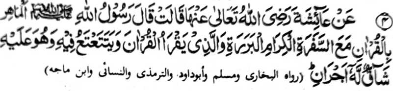

Miyakathitayan ko A’isha (Radhiallaho ‘Anha) a pitharo iyan a pitharo o Rasulollah (Sallallaho ‘Alaihi wa Sallam), “So tao a mapasang-i kabatiya sa Qur’an na khaped sekaniyan ko manga Mala-ikat a panonorat a manga pemamasela-an go so tao a batiya-an niyan so Qur’an a pephamangisozong ogaid na peroromasayan niyan [so kapembatiya-a niyan non] na bagi-an niyan so dowa a balas.”
So katharo a “Mapasang-i kabatiya sa Qur’an” na aya ma-ana niyan na so tao a mapasang-i kalangag ago kabatiya sa Qur’an. Tanto a maporo a bantogan opama ka so tao na masowa iyan so ma-ana niyan ago so paka-antapan non.
So kaped ko manga Mala-ikat na aya ma-ana niyan na, lagid o manga Mala-ikat a tomiyogalin ko Qur’an pho-on ko Lauhe-Mahfuz (Kasosoratan ko langowan taman si-i sa langit), a sekaniyan mambo na inisampay niyan so Qur’an ko salakao ron nggolalan ko kapembatiya-an niyan non na, sabap san na miakapelagid siran sa galebek, o di na khitapi sekaniyan sangkoto a manga Mala-ikat si-i ko Gawi-i a Kaphangokom.
So tao a pephamangisozong sa kapembatiya iyan sa Qur’an na bagi-an niyan so dowa a balas:
Kena ba aya ma-ana ini na ba niyan khalawani so balas a khakowa o tao a mapasang-i kabatiya sa Qur’an. So balas a mapembagi-an o tao a mapasang-i kabatiya sa Qur’an na tanto a makalalawan, sa aya den a miphagepeda iyan na so manga Mala-ikat a masasalebo. Aya osayan niyan na so dokao a madadalem ko kipekhisozong ago so karegen o kapembatiya-a ko Qur’an na aden a balas o omani isa kiran. Sabap sangkoto a maola-ola na oba bagaken o tao so kabatiya sa Qur’an, apiya pen so kipekhisozong na mabaloy a bangen.
So Mulla Ali Qari na miya-aloy niyan pho-on sa ‘riwayat’ o Tibrani ago so Baihaqi a so tao a di niyan khilangag so Qur’an phiya-piya ogaid na tanto niyan a peroromasayan sa gi-i niyan non kapaganada na bagi-an niyan so takep a balas. Lagidoto mambo so tao a mandidingan-dingan niyan a kilangagen niyan ko Qur’an ogaid na di niyan khagaga o ba niyan milangag, na o di niyan taregen so gi-i niyan non kanggalebeka, na si-i ko Gawi-i a Qiyamat na mbalowin sekaniyan o Allah a ped ko manga ‘Hufaaz’ [miyamakalangag sa Qur’an].